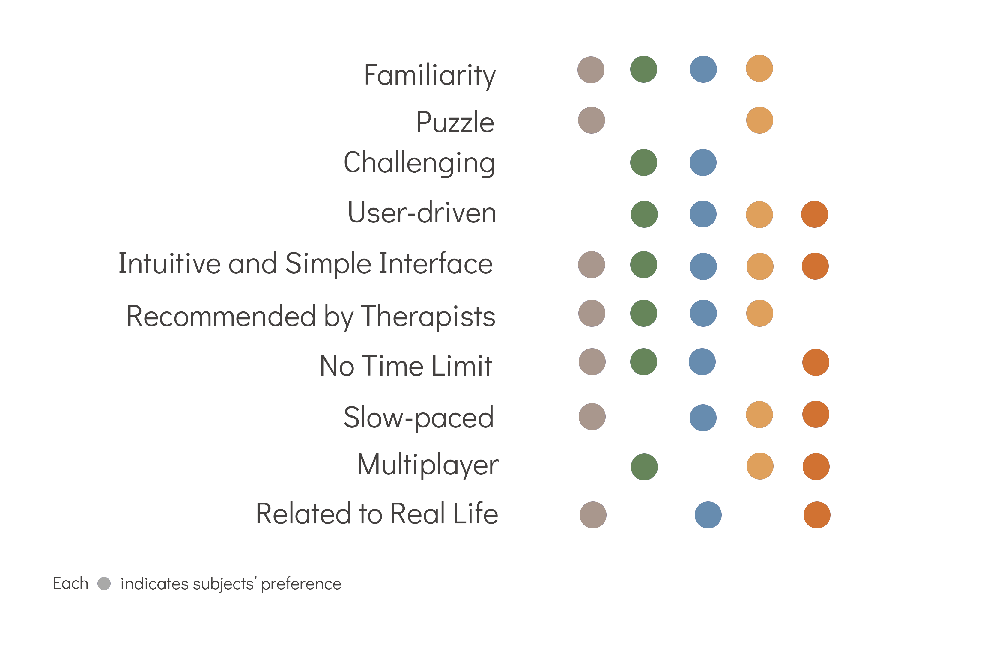
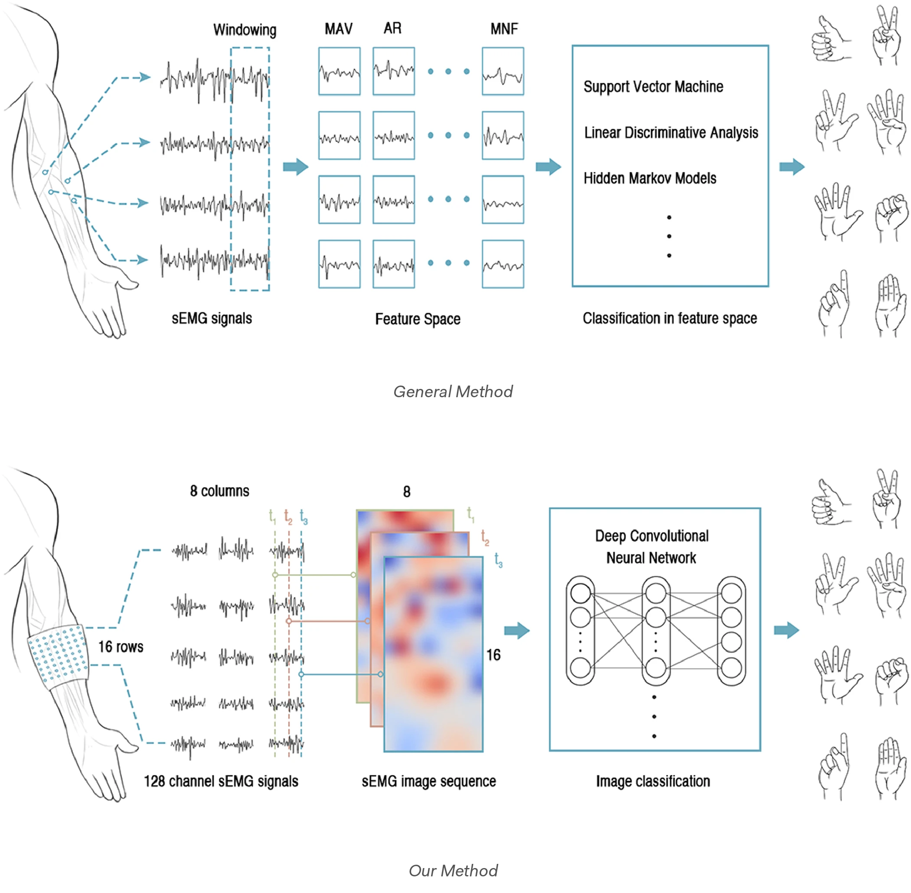
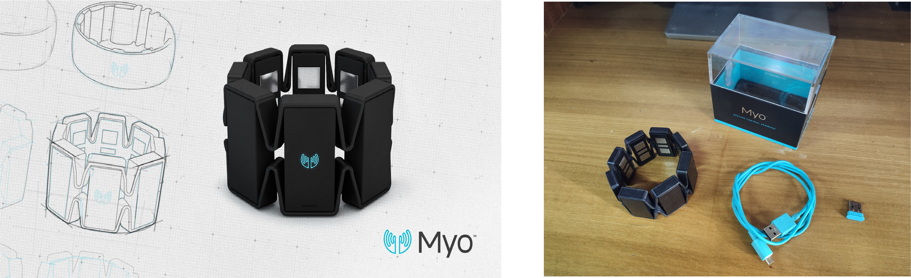

This is a Game About Embracing Nature.
The game Florist is a mobile simulation adventure game about learning how to identify common plants.
The game as a guide to getting started to distinguish plants allows the player to build a knowledge base of plants, learn plant identification, and learn more about the influence of climate conditions. The game mechanic is based on observation of plants through the DIY specimen cards process, including examining plant characteristics and typing names. The player’s job as a museum keeper is to fill the collection with new plant species and samples. Among the creatures, some of them are Medicinal herbs or edible, while some are toxic and dangerous. We follow the DPE framework (Winn, 2009) to design the game, which consists of four parts, namely, learning, storytelling, gameplay, and user experience.
| Date: | 04.2022 |
| Team: | Aris, Matthew, Yi Lu, |
| Target Audience: | 12+ |
| Genre: | Adventure, Simulation |
| Full Doc: | PDF Doc |
| Share: |
Learners will able to:
It is a mobile simulation adventure game about learning how to identify common plants. The player plays as a museum keeper to fill the collection with new plant species and samples, and will learn their features. Among the creatures, some of them are Medicinal herbs or edible, while some are toxic and dangerous.
The game mechanics are designed to support successful learning which involves encoding and retrieval-memory in and memory out according to Dirksen (2015).
The goal of the storytelling is to lower the difficulty of understanding the game mechanics. It invites the player to be immersed in the game environment and enjoy learning. The description of the story is as follows:
You have a museum of plants, featuring a huge assortment of palms, herbs, conifers and flowers of all shapes and sizes that you collected and identified.
The game revolves around the player as a botanist for the museum they are creating in a gameplay loop, shown in figure 1. The player needs to fill up the museum with plants (see prototype 1) so that it may thrive. To do this the player must enter the game’s map, shown in prototype 2, and explore the levels in the map, shown in prototype 3. In each level, the player will be able to view and identify plants. There will also be quests presented in the levels by non-player characters (NPCs) to identify and bring plants to them. These NPCs will also be there to provide some information to help identify plants. Quests from NPCs can occur both before and after the player finds and collects a plant. Doing an NPCs quest will give the player rewards, usually an extra seed that the player can use in their museum or unlock the new map.
When out in the world, the player will need to identify plants to end up earning them, whether on their own or through the quests. The identify mode, as pictured in prototype 4, will have the player make use of the info the character currently knows on every plant. By using identifying features, like leaves, roots, and climate, the player can correctly find the plant they are looking for.
Through the level design we can see where the player must find information on plants and use the general information to identify plants. The NPC quests will also provide the player with the use of the plant that they are identifying. The game also provides the player with how plants are identified and what it takes to identify through the journal.

The player explores the land (top-down view) and finds a moth orchid. He collects the plant and enters the lab space to identify the orchids. He marks the plant's features according to the guiding brochure. It has wide, flat, dark leaves that are arranged opposite each other.
According to our survey, the most desired feature is "familiarity", "Intuitive and Simple Interface", and "Recommended by Therapists".
Therapists have developed several clinical methods to indicate motor ability. We have found an evaluation index with higher accuracy for each evaluation object. To evaluate patients' performance and , we decided to use:

Our project uses "a gesture recognition method based on instantaneous EMG images" proposed by the ZJU-CAPG group. It introduces the concept of an sEMG image and conducts gesture recognition based on sEMG images with a classification scheme of a deep convolutional network. The resultant recognition a ccuracy reached reached 99.0% using simple majority voting over 40 frames with little observational latency.
Myo is a lightweight elastic armband that transmits hand gestures to a connected device via Bluetooth. Its metal contacts can measure electrical activity in users' forearm muscles.
Myo Armband features both portability and easy-to-use, suitable for various rehabilitation environment.
We decided to design a rehabilitation game system based on hand gestures.
With the game, patients can carry out their routine exercises either from the rehabilitation center or remotely. The game has the effect of increasing users' self-motivation to perform tasks by creating interest and enjoyment.
Additionally, it can provide individualized treatment plans developed on the basis of sEMG analysis and following case-by-case treatment goals.


In the present work, we used Unity engine and the gesture recognition method with Myo armband to create a 3D game.

Users can manipulate the cube in the center of the screen through arm movements and different gestures.
We found that the mechanics of the game need to be more easy-to-understand. Besides, the operating should not interfere with the users‘ exercising experience.

Users can manipulate the cube in the center of the screen through arm movements and different gestures.
We found that the mechanics of the game need to be more easy-to-understand. Besides, the operating should not interfere with the users‘ exercising experience.

Through on-site investigations and visits to the rehabilitation department of the hospital, we continued to improve our design plan, especially in the areas that users urgently need, the necessary player guidance, game mode selection and data display area in the interface has been added.

For each game map, we determined an resonanle duration and intensity of the treatment. For example:

The game system was tested live with 4 outpatients with hemiplegia.
Participants were given an explanation of the game and presented with the gestures. They first familiarized themselves with the operation and gameplay and then played several rounds. Participants had a several-minute rest after each round.
After the test, we asked users to rate how effective they think the game would be, and interviewed them how they felt about their game experience. The user feedback is summarized below.

In general, they appreciate the game-based rehabilitation systems:
To bring the game system into the routine practice of stroke rehabilitation, we need to improve it from the perspective of game design and rehabilitation, and: